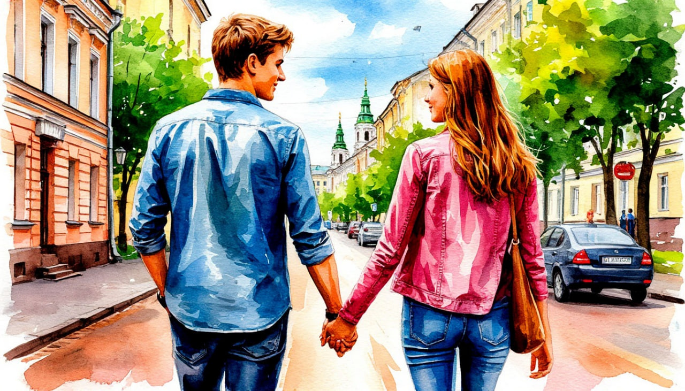

Беларусь: Вот это любовь.

Даты тура:
28 мая - 1 июня | 25 - 29 июня | 9 - 13 июля | 20 - 24 августа | 17 - 21 сентября
Стоимость тура:
- 32 000 р. - взрослый
- 31 400 р. - пенсионеры/студенты/школьники
- по запросу - одноместное размещение
По программе:
- - Обзорная автобусно-пешеходная экскурсия по Минску
- - Пивоваренный завод "Аливария" (за доп.плату/по желанию)
- - Экскурсионная программа в Заславль (за доп.плату/по желанию)
- - Музей старинных технологий и ремесел "Дудутки"
Программа тура:
1 день: Отправление
- 14-30- выезд из Костромы от ТРЦ "РИО" (Ул. Магистральная, 20), правый угол от центрального входа
2 день: Минск
- Прибытие в Минск. Встреча с гидом.
- Завтрак в кафе города.
- Город выглядит юным, хотя по праву может гордиться своим возрастом – ведь Минск старше Москвы, Санкт-Петербурга, Варшавы и Вильнюса. Сколько лет Минску? Совсем недавно столица отпраздновала 950 лет! Белорусская столица, город Минск — словно птица Феникс, возрождающаяся раз за разом. С момента своего основания Минск 18 раз полностью выгорал и отстраивался заново. Даже сейчас, в XXI веке, Минск во многом сохраняет очарование советских времён, и у многих граждан бывшего СССР он вызывает ностальгию.
- Обзорная экскурсия по Минску: исторический центр, Верхний город, Свято-Духов Кафедральный собор, Католический собор Святой Девы Марии, Ратуша, Троицкое предместье, улицы и площади белорусской столицы.
- Во время обзорной экскурсии у Вас будет уникальная возможность увидеть Минск со смотровой площадки Национальной библиотеки республики Беларусь на высоте 73 метра. Подъём на панорамную площадку, которая находится на 23-м этаже здания осуществляется на панорамном лифте (в случае непогоды - гости попадают на 22-й этаж, на закрытую обзорную площадку).
- Обед.
- Размещение в гостинице.
- Свободное время.
- Свободное время.
- Вечером возможность совершить экскурсию на один из самых старых пивоваренных заводов «Аливария» (за доп. плату. Стоимость уточняется)*.
- Увлекательная экскурсия по территории предприятия, которому уже более 155 лет! Побывав в историческом здании старейшего действующего производства, Вы узнаете о развитии пивоварения от самых истоков до сегодняшнего дня: увидите древнее оборудование для варки пива и заглянете в современные производственные цеха. Экскурсия проходит в здании – историко-культурной ценности – в котором производится пиво с конца XIX века. Завершится все профессиональной дегустацией пива!
- Свободное время.
- Свободное время.
3 день: На выбор
- Завтрак в отеле
- Свободный день ИЛИ экскурсионная поездка в Заславль (за доп. плату. Стоимость уточняется)*
- Отправление в Заславль (Минск → Заславль: 27 км)
- Заславль – город - спутник Минска, находится в 27 километрах от центра белорусской столицы. При этом по возрасту он старше: первое его упоминание в летописях относится к 985 году. Согласно преданиям, построен великим князем Владимиром Святославичем, который отдал его жене Рогнеде и сыну Изяславу (в честь него назвали город). За свою многовековую историю также был в составе Великого княжества Литовского и Речи Посполитой, а после ее раздела в составе Российской империи.
- В ходе обзорной экскурсии Вы познакомитесь с современным Заславлем, который носит статус города-заповедника. На его территории: историко-культурный музей-заповедник, объекты которого находятся в значимых исторических местах Заславля. Среди них – городища «Вал» и «Замэчак», костел Рождества Пресвятой Девы Марии.
- Также Вы посетите этнографический комплекс «Млын», построенный на месте старинной местной усадьбы и рассказывающий о буднях жителей города в древние века, и музей белорусской маляванки , где помимо самих «росписных ковров» представлены работы Язэпа Дроздовича
- Свободное время на обед
- Отъезд в Минск
4 день: Дудутки
- Завтрак в отеле. Освобождение номеров.
- Отправление в Дудутки (Минск → Дудутки: 40 км).
- Экскурсия в музей старинных технологий и ремесел "Дудутки".
- Вас ожидает путешествие в мир стародавнего быта и профессий. Музей «Дудутки» расположен в живописном месте рядом с рекою Птичь в полутора километрах от д. Дудичи.
- «Дудутки» позволяют ненадолго прикоснуться к материальной культуре и быту белорусов. Он выходит за пределы традиционного представления о музее. Экспозицией здесь является все, что входит в музейно-производственный комплекс. Главная особенность «Дудуток» – сохранение старинных технологий изготовления изделий.
- Внутреннее устройство «Дудуток» определено его главной идеей — возрождение и демонстрация быта старинной белорусской шляхетской усадьбы. Основной формой жизни панского двора на Беларуси на протяжении столетий было натуральное хозяйство в самом высоком смысле этого слова, то есть умение жить в гармонии с окружающим мира, брать из него все необходимое, не нарушая природного баланса. Именно поэтому и имел каждый хозяин на своей усадьбе и собственную пекарню, и сыроварню, и бровар, и мельницу, и кузницу, и конюшню…
- Обед.
- Отъезд в Россию. Ночной переезд.
5 день: Возвращение домой
Прибытие в Кострому в первой половине дня (ориентировочно)
В стоимость тура входит:
- - проживание в гостинице*
- * уточняется
- - питание: по программе
- - услуги гида-экскурсовода
- - экскурсионная программа
- - автобусное обслуживание по программе тура
- Для бронирования необходимы данные паспорта РФ и свидетельства о рождении, если с вами путешествуют дети
- Предоплата – 50% от стоимости тура. Остаток за 30 дней до даты выезда.
- Любой тур можно оформить не выходя из дома. Подробнее: Тут
Стоимость тура не зафиксированы и могут быть изменены в большую или меньшую сторону в зависимости от уровня спроса в любой момент.
Время начала экскурсий и их порядок указано ориентировочно.
Фирма-исполнитель оставляет за собой право замены экскурсий без уменьшения общего объема экскурсионной программы.
По вопросам бронирования обращайтесь: